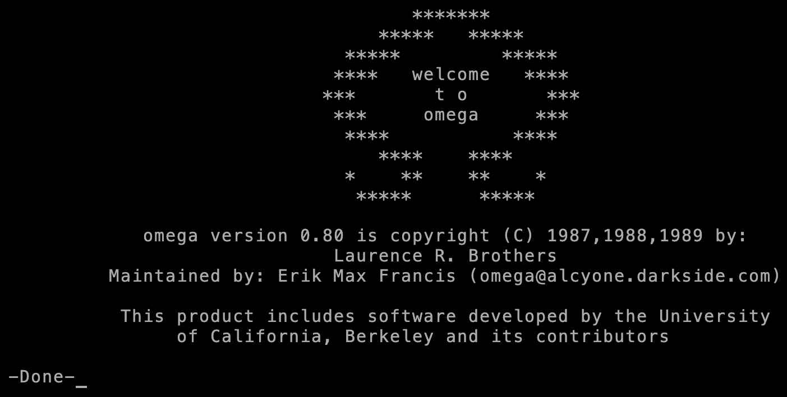
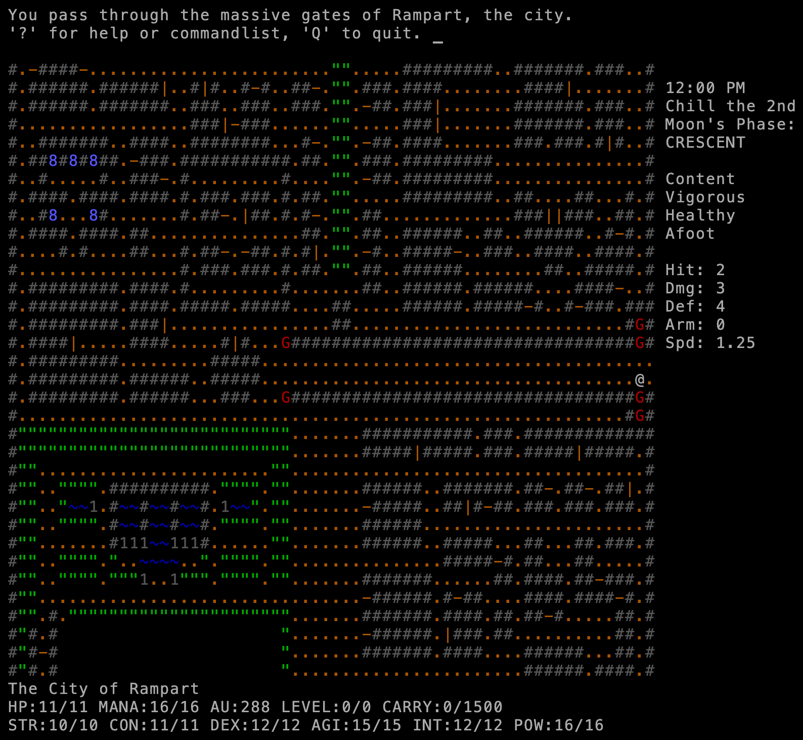
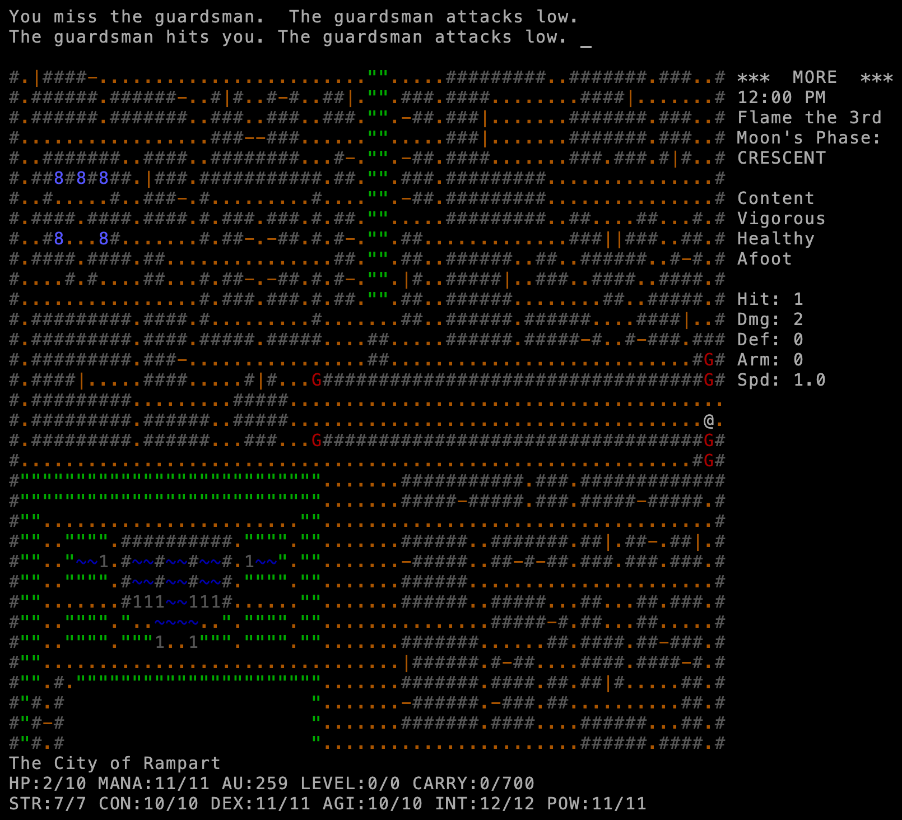
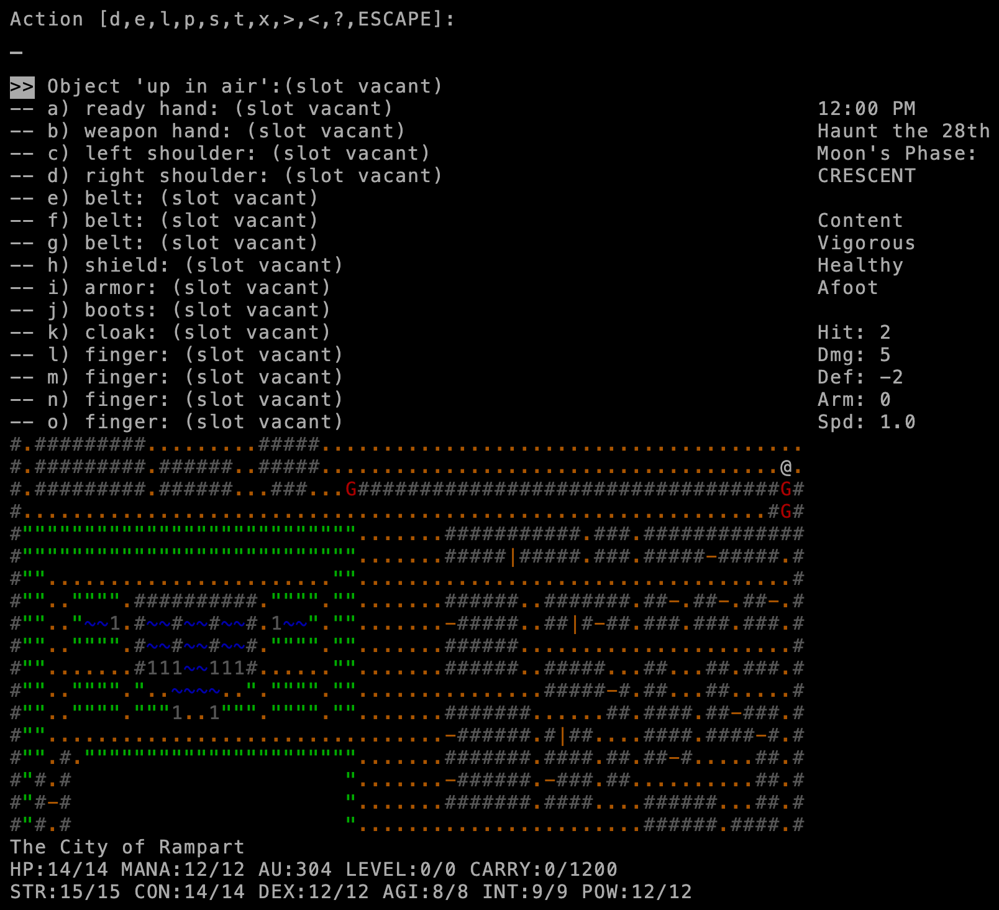

Date of birth1987 copyright 1987–1989; this is 0.80.2
CreatorLaurence R. Brothers maintained later by Erik Max Francis
LanguageC ~38,000 lines
PlatformUnix curses also DOS, Amiga
Lineage
Omega calls itself “a hack-style game”: its screen, keys and dungeons follow Rogue and Hack. It shares no code with them. What it added was a whole world around the dungeon: the city of Rampart, a countryside map with towns, temples and castles, guilds and gods. That world-map idea shows up again later in ADOM. See the family tree.
Played here: Omega 0.80.2, the last maintained release, in a new curses frontend.
Credits
Laurence Raphael Brothers
Design and code (1987–1989)
Erik Max Francis
Maintainer of 0.80.x
The University of California, Berkeley
Some code, credited on the title screen
Screenshots

Start: version 0.80.2, Laurence R. Brothers and Erik Max Francis.

First steps: “You pass through the massive gates of Rampart, the city.”

A fight: attacking a city guard. “The guardsman hits you.” HP 2/10; the next hit killed.

Inventory: Omega’s body slots: “up in air”, ready hand, weapon hand, shoulders, belts, shield, armor, boots, cloak, four fingers.
Trivia
At start you can “play yourself”: the game asks how much you bench-press, whether you do a martial art or a field sport, and builds a character from your answers. (char.c)
Walk into the Sea of Chaos and you gain levels, then die: “Killed by immersion in raw Chaos.” (Seen while taking these screenshots.)
Wizard mode is only for the user named in the source (“max”). Anyone else gets “the Wizard of Omega” and “Do not meddle in the affairs of Wizards — it makes them soggy and hard to light.” (command3.c)
The high-score list names who holds each title: Duke of Rampart, Archmage, Prime Sorceror, the six High Priests, the Lords of Chaos and Law. (title screen)
Brothers wrote that in the end the player “winds up doing basically all the same things each game, no matter which guild”. (docs/readme3)
A world, not just a dungeon: a city, a countryside map, villages, temples, a castle, several dungeons.
Guilds and ranks: Legion, Arena, Collegium Magii, Thieves’ Guild, Order of Paladins, Circle of Sorcerors, the Nobility and six priesthoods (Odin, Set, Athena, Hecate, the Druids, the Lords of Destiny).
Many ways to win: become head of a guild or sect, or reach “Adept”.
Law and Chaos alignment, moon phases and a calendar that matter.
Code dive
C, about 38,000 lines in 50 files. Maps (city, countryside, arena, temples) are packed data files in omegalib/.
Written for Unix curses; ports to MS-DOS and the Amiga ship in the source.
This port: a small curses shim, drawn to a canvas in WebAssembly, plus explore (X), walk-to-stairs and an item menu. Source: memmaker/omega.
Stats
Thing
Count
Notable ones
Monsters
150
On 11 levels: the bandersnatch, borogrove, catoblepas, coma beast, astral vampire, aggravator fungus, zombie overlord.
Items
~215
41 weapons, 17 armours, 24 scrolls, 18 potions, 17 wands and staves, 10 rings, 24 artifacts including the Orbs of Fire, Water, Earth, Air and Mastery.
Spells
41
From magic missile to Wish.
Guilds and sects
8
Legion, Arena, Collegium Magii, Thieves’ Guild, Paladins, Sorcerors, Nobility, Priesthood.
City sites
27
Bank, arena, jail, temples, the Collegium, the thieves’ guild …
Traps
13
Manual
The in-game help files 1–13, joined: read it here (text). In the game, ? shows the same pages.
Getting started
Open the game. Pick c to roll a character (or p to play yourself), name them.
You start at the gate of Rampart. Explore the city: shops, the bank, guilds. Don’t attack the guards.
Join a guild early; it gives training, spells or a place to sleep.
Leave by the gate for the countryside; enter sites with >.
Help
No walkthrough exists. The help files explain guilds and quests. Tips:
Moving into hedges, water or lava asks for confirmation — say no to water and lava.
Buy food early; you get weak fast in the countryside.
Never enter the Sea of Chaos.
Rest (.) to heal before leaving town.
Cheats
Two wizard modes exist; both mark the game as cheated:
Ctrl+G works only for the user “max”, so not here.
The back door: in the city, bash (z) toward the top-left corner square (0,0) and answer y. Then Ctrl+X grants wishes (“Stats”, “Wealth”, “Acquisition”, “Summoning” …). (command2.c, effect1.c; not tried here)